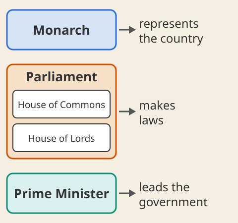

König, Parlament und Premierminister
Mit einem KI-Tutor lernen
Ein KI-Tutor erklärt dir diese Seite und hilft dir bei den Aufgaben. Wähl deinen Assistenten:
Mit Claude öffnen Mit ChatGPT öffnen Mit Mistral Vibe öffnen
Du nutzt dein eigenes Konto beim Anbieter. Der Assistent ist kein Angebot von lernapps.net: lernapps liefert nur Inhalte und Aufgaben. Die Wahl gilt für alle Seiten, nur auf diesem Gerät.
Peters Frage aus Millbrook
Die Klasse steht in Westminster. Sophie schickt Peter ein Foto. Peter schreibt zurück: „Mr Hill said the UK has a monarch. What is that?“
Aufgabe
Lösung
ein König oder eine Königin richtige Antwort
Ein monarch ist ein König oder eine Königin.
der Regierungschef
Der Regierungschef heißt Prime Minister. Das ist eine andere Aufgabe.
ein Mitglied des Parlaments
Ein Mitglied des Parlaments ist eine Abgeordnete oder ein Abgeordneter. Ein monarch ist ein König oder eine Königin.
Monarch bezeichnet einen König oder eine Königin.
Mehr dazu: Lernlandkarte Englisch · Politik im Vereinigten Königreich
Das kannst du danach: Du liest einen Sachtext über Westminster, beschreibst die Aufgaben von König, Parlament und Premierminister auf Englisch und erklärst, was eine konstitutionelle Monarchie ist.
Westminster, der König und das Parlament
| Englisch | Deutsch |
|---|---|
| monarch, head of state | König oder Königin, Staatsoberhaupt |
| constitutional monarchy | Monarchie, in der der Monarch nach einer Verfassung handelt |
| Parliament | Parlament |
| Cabinet | die wichtigsten Ministerinnen und Minister der Regierung |
| Member of Parliament (MP) | Abgeordnete, Abgeordneter |
| assembly | Versammlung, hier ein gewähltes Gremium wie ein Parlament |
| trust | Vertrauen; vertrauen |
| symbol of unity | Zeichen der Einheit |
- Westminster is a part of London. The Palace of Westminster stands there, and the Elizabeth Tower belongs to it. A big bell in the tower is called Big Ben.
- The United Kingdom is a constitutional monarchy. The monarch is the head of state, but does not decide alone.
- Since 8 September 2022 the monarch has been King Charles III. He became monarch after his mother, Queen Elizabeth II. The monarch is often seen as a symbol of unity.
- Parliament makes the laws of the UK. It meets in Westminster, in a famous palace. It has two parts: the House of Commons and the House of Lords.
- Scotland, Wales and Northern Ireland have their own parliament or assembly. They make some of the laws there.
- The Prime Minister is the head of the government. He or she gives advice to the monarch, leads the Cabinet and chooses its ministers.
- A Prime Minister stays Prime Minister as long as the House of Commons trusts him or her. In practice, the Prime Minister is also a Member of Parliament (MP).
- People see all this in different ways.

Wer in Westminster und im Land welche Aufgabe hat, als Schaubild (eigene Zeichnung).
Quelle: eigene Zeichnung. Lizenz: CC-BY-4.0.Verstehen, belegen, anwenden
Aufgabe
Lösung
Der Monarch entscheidet nicht allein. richtige Antwort
So steht es im Text. Der Monarch ist Staatsoberhaupt, entscheidet aber nicht allein.
Der Monarch entscheidet alles allein.
Genau das sagt der Text nicht. Er sagt, dass der Monarch nicht allein entscheidet.
Es gibt keinen Monarchen mehr.
Im UK gibt es einen Monarchen. Seit dem 8. September 2022 ist es King Charles III.
Bei einer constitutional monarchy entscheidet der Monarch nicht allein.
Mehr dazu: Lernlandkarte Englisch · Politik im Vereinigten Königreich
Aufgabe
Lösung
Richtige Antwort: the monarch – ist Staatsoberhaupt und entscheidet nicht allein; the Prime Minister – leitet das Cabinet und wählt die Minister aus; the House of Commons – kann dem Premierminister das Vertrauen entziehen
Der Monarch ist Staatsoberhaupt, der Prime Minister leitet das Cabinet, und das House of Commons muss dem Prime Minister vertrauen, sonst kann er nicht im Amt bleiben.
Mehr dazu: Lernlandkarte Englisch · Politik im Vereinigten Königreich
Aufgabe
Lösung
Zeile 3
In Zeile 3 geht es um den Monarchen seit dem 8. September 2022.
Zeile 5
In Zeile 5 geht es um Gesetze für Schottland, Wales und Nordirland.
Zeile 6
In Zeile 6 stehen die Aufgaben des Prime Minister, aber nicht, wie lange er im Amt bleibt.
Zeile 7 richtige Antwort
In Zeile 7 steht, dass der Prime Minister im Amt bleibt, solange das House of Commons ihm vertraut.
Die Antwort steht in Zeile 7.
Mehr dazu: Lernlandkarte Englisch · Politik im Vereinigten Königreich
Aufgabe
Lösung
Kasten A
Buckingham Palace ist der offizielle Wohnsitz des Monarchen in London, nicht der Sitz des Parlaments.
Kasten B richtige Antwort
Das Parlament tagt im Palace of Westminster.
Kasten C
Der Elizabeth Tower gehört zum Palace of Westminster. Er ist ein Turm mit der Glocke Big Ben, nicht der Sitz des Parlaments.
Der Palace of Westminster ist der Sitz des Parlaments.
Mehr dazu: Lernlandkarte Englisch · Politik im Vereinigten Königreich
Aufgabe
Wähle das richtige Fragewort.
Tipp
Who fragt nach Personen, What nach Sachen.
- Wer ist das Staatsoberhaupt? → … is the head of state?
- Was ist Big Ben? → … is Big Ben?
Lösung
- Who is the head of state?
- What is Big Ben?
Aufgabe
Schreibe den Satz auf Englisch.
Tipp
Bei he, she und it bekommt das Verb ein -s.
- Das Parlament tagt in London.
- Der Premierminister ist auch Abgeordneter.
Lösung
- Parliament meets in London.
- The Prime Minister is also an MP. (auch richtig: The Prime Minister is also a Member of Parliament.; The PM is also an MP.; The PM is also a Member of Parliament.)
Selbst sprechen und schreiben
Aufgabe
Hör zu, sprich nach und nimm dich auf. Vergleiche dann mit dem Original.
Tipp
Hör den Satz zuerst. Sprich dann langsam nach und achte auf die Betonung bei Parliament und Minister.
- Sophie sends a photo of the tower to Peter.KI
- The ministers work with the Prime Minister.KI
- Peter asks a lot of questions about London.KI
Zum Aufnehmen braucht diese Aufgabe JavaScript. Die Beispiele kannst du auch ohne anhören.
Lösung
- Sophie sends a photo of the tower to Peter.
- The ministers work with the Prime Minister.
- Peter asks a lot of questions about London.
Offene Aufgabe
Der Monarch ist Staatsoberhaupt, entscheidet aber nicht allein. Welche Argumente gibt es dafür und dagegen? Schreibe drei bis fünf Sätze auf Englisch und nenne zwei Sichtweisen. Es gibt hier kein Richtig oder Falsch.
Eine gute Antwort enthält:
- Du nennst eine Sichtweise, die im Text steht, zum Beispiel das Symbol der Einheit. Nachlesen
- Du nennst eine zweite Sichtweise, zum Beispiel einen anderen Vorteil oder eine Frage, die Menschen stellen. Nachlesen
- Du schreibst neutral und bewertest keine der beiden Sichtweisen als richtig oder falsch. (Form)
- Es sind drei bis fünf ganze Sätze. (Form)
Lösung
Some people say that a monarch can be a symbol of unity. A monarch does not decide alone, so the government and Parliament do the political work. Other people ask what a monarch is for if he or she does not decide alone. People see this in different ways.
Zurück in Millbrook
Das war die letzte Seite. Sophie sitzt im Zug nach Millbrook, und Peter wartet schon am Bahnhof. Im Gepäck hat sie viel zu erzählen. Hier ist der Schulkalender mit neuen Beispielen aus den Kapiteln 4 und 5.
| Thema | Beispiel |
|---|---|
| Verkehrsmittel | Mr Hill travels to the airport by taxi. |
| Klischees | Stereotypes are often wrong. |
| 1066 | William the Conqueror was the first Norman king of England. |
| Tudors | Henry VIII had six marriages. |
| Parlament | The House of Commons and the House of Lords are two parts of Parliament. |
Fehler gefunden oder eine Idee für diese App?